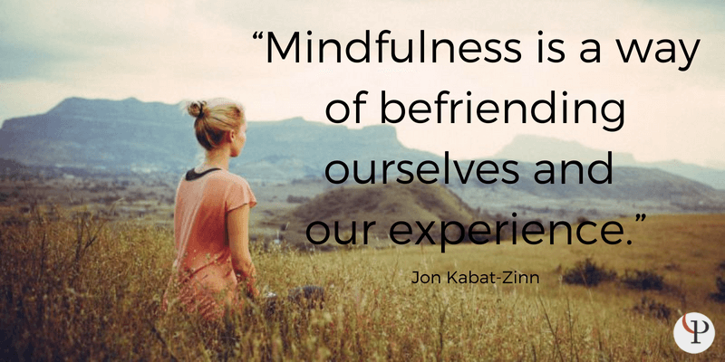

Mindfulness
What is Mindfulness?
Mindfulness is the basic human ability to be fully present, aware of where we are and what we are doing, and not overly reactive or overwhelmed by what is going on around us.
"Mindfulness also involves acceptance, meaning that we pay attention to our thoughts and feelings without judging them, without believing, for instance, that there is a 'right' or 'wrong' way to think or feel in a given moment. When we practice mindfulness, our thoughts tune into what we are sensing in the present moment rather than rehashing the past or imagining the future."
Greater Good Magazine: Science based insights for a meaningful life